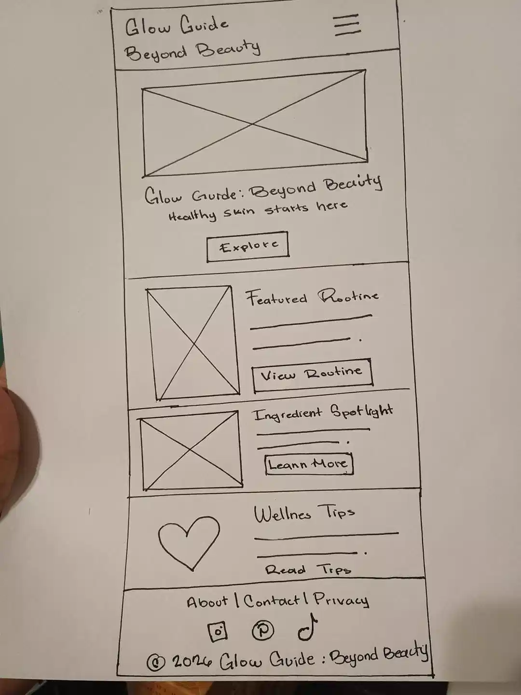
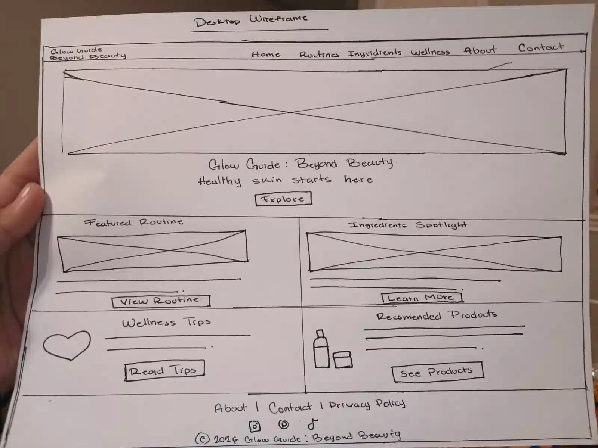

Project Name
Glow Guide: Beyond Beauty was chosen because it reflects the website's mission of looking beyond cosmetic beauty by promoting healthy skincare habits, confidence, wellness, and education. The website serves as a trusted guide for users who want healthier skin through informed decisions.
Site Purpose
Glow Guide provides educational information about skincare routines, ingredients, wellness habits, and affordable product recommendations for different skin types. The website aims to simplify skincare by presenting reliable information in an organized and beginner-friendly format.
Target Audience
- Teenagers and young adults interested in skincare.
- People beginning their first skincare routine.
- Users with oily, dry, combination, or sensitive skin.
- Anyone looking for trustworthy skincare education.
Scenarios
- Which skincare routine is best for oily skin?
- Which ingredients should I avoid if I have sensitive skin?
- Can I build an effective skincare routine on a budget?
- What products are recommended for acne-prone skin?
Color Scheme
- Soft Pink (#8A4F64): Headings, buttons, and links.
- Light Pink (#F7DFE6): Section backgrounds.
- Mint Green (#D8EAD2): Cards and accent areas.
- Cream (#FFF8F2): Main page background.
- Dark Gray (#2D2D2D): Paragraph text.
#8A4F64
#F7DFE6
#D8EAD2
#FFF8F2
#2D2D2D
Typography
Playfair Display will be used for headings because it gives the website an elegant and modern appearance.
Poppins will be used for body text because it is clean, highly readable, and works well on both desktop and mobile devices.
Wireframes

